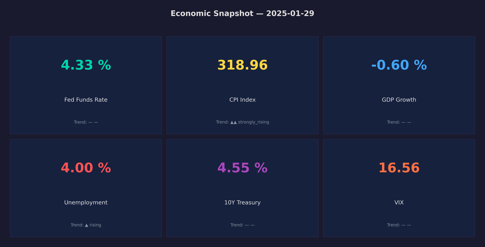
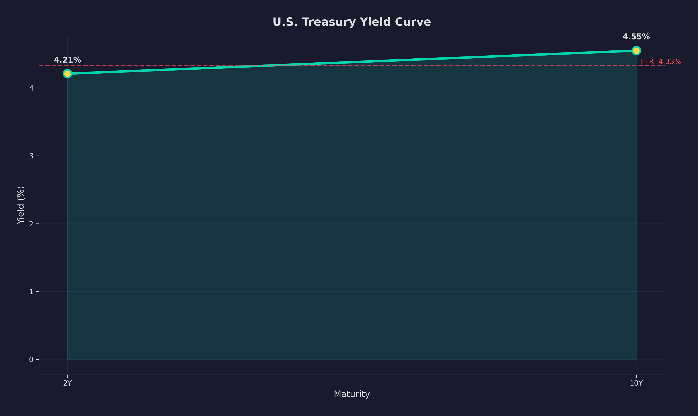
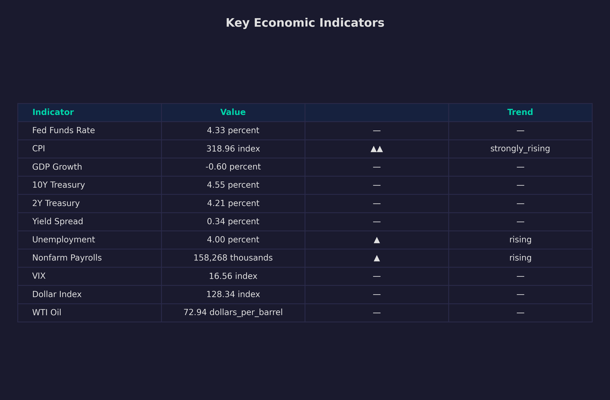

The Silent Killer of Financial ML (And How I Built a Time-Travel Database to Fix It)
Point-in-time data engineering for honest backtesting — 21,000 lines, 7 async collectors, and the difference between a model that looks brilliant and one that actually works.
GDP growth for Q3 2025 was first reported as 2.8% on October 30, 2025. The second estimate on November 27 confirmed 2.8% — then the third estimate on December 19 revised it to 3.1%.
If your model sees the 3.1% figure while simulating the January 2026 FOMC meeting, you have contaminated the simulation with information from the future. This is called look-ahead bias, and it is the silent killer of quantitative finance. Every hedge fund quant knows it. Most portfolio projects on GitHub ignore it entirely.
The economy service in my FOMC simulation platform exists to solve exactly this problem. It is a 21,482-line Python microservice — the largest service in the system — and its entire job is answering a deceptively simple question: what did the economy look like on date X, using only information that actually existed on date X?
Why This Is Hard
Every major economic indicator gets revised. GDP gets revised three times. Payrolls get revised for months. The CPI number your model trained on for September 2025 is not the CPI number that existed in September 2025.
If you pull GDP data from FRED today, you get the latest revised values — not the values that existed when the FOMC was making decisions. A model that trains on revised data will look brilliant in backtesting and collapse the moment it touches live data, because in production it only has access to the first estimate, not the third revision.
The solution is vintage data: fetching each indicator as it existed on a specific date, not as it exists today. FRED provides this through ALFRED (Archival FRED), but building a system that enforces this constraint consistently across 130+ indicators from 7 different data sources is where the engineering challenge lives.
The Architecture
The economy service runs on port 9000 as a FastAPI microservice. It is the single source of truth for all macroeconomic data in the platform — no other service touches an external API.
130+ series · 2,000+ observation days
Three critical design constraints:
Collectors only run during backfill. When the simulation pipeline requests data, it reads exclusively from the database. No live API calls during a simulation run. This makes simulations reproducible and fast.
Everything flows through port 9000. No other service in the system stores economic data or calls external APIs. This means point-in-time constraints are enforced in exactly one place.
Every value carries provenance. Each indicator comes with its observation date, data source, and freshness score relative to the meeting date.
FRED and the Vintage Query
The critical method is get_series_as_of_vintage, which leverages ALFRED:
async def get_series_as_of_vintage(
self,
series_id: str,
vintage_date: str,
) -> list[dict]:
"""Fetch observations using ALFRED vintage —
what was known as of vintage_date.
Critical for honest backtesting: uses only data
available at the time, avoiding look-ahead bias.
"""
return await self.get_series(
series_id,
realtime_start=vintage_date,
realtime_end=vintage_date,
)
Setting realtime_start and realtime_end to the same date tells FRED to return the data as it existed in its database on that specific date. GDP reported as 2.8% on October 30? That is the value you get if your vintage date is October 31, even though the "current" value has been revised to 3.1%.
The rate limiting is dual-layered because during a full backfill of 130+ series across six years of data, you will hit FRED's API limits without discipline:
class FREDCollector:
def __init__(self):
self._semaphore = asyncio.Semaphore(self.rate_limit)
self._min_interval = 60.0 / self.rate_limit
self._last_request_time: float = 0.0
async def _request(self, endpoint, params=None):
async with self._semaphore:
elapsed = time.monotonic() - self._last_request_time
if elapsed < self._min_interval:
await asyncio.sleep(self._min_interval - elapsed)
response = await self.client.get(url, params=params)
self._last_request_time = time.monotonic()
A semaphore bounds concurrency and a monotonic clock enforces minimum intervals between requests.
Multi-Source Ingestion
FRED is the backbone, but four other sources fill in gaps:
BLS provides JOLTS data (job openings, hires, quits), earnings distribution, and state-level unemployment via LAUS series. The state-level data matters because each of the 12 Federal Reserve districts covers multiple states — the collector fetches per-state data and computes district-level averages.
BEA provides NIPA tables including GDP components that FRED does not carry at the granularity needed.
FRASER (the Fed's historical archive) provides historical FOMC minutes, speeches, and Beige Books for the RAG pipeline.
SearXNG (self-hosted meta-search) provides financial news aggregation, with each article getting a publication date that participates in the point-in-time constraint.
Every value from every source passes through validate_range() before storage. An unemployment rate of 500% or a negative CPI index means the data source returned garbage. Catching this at ingestion time prevents corrupted data from reaching the simulation agents.
The News Pipeline
Structured indicators tell you what the economy is doing. News tells you why — and what the people making decisions are saying about it. The news collector stitches four distinct channels into a single, deduplicated, date-stamped article stream.
Scrapes the official speech index by year. Each speaker is mapped to their district — Powell tagged national, Kashkari tagged Minneapolis — so downstream agents receive news scoped to their region.
RSS feeds from all 12 regional banks, with HTML fallback for banks that block feeds (New York, Richmond). Parses RSS 2.0 and Atom 1.0, normalising dates to ISO 8601.
Self-hosted Docker container — no API key, no data leaving the network. Fans out to Google News, Bing News, and DuckDuckGo News. Month-by-month keyword searches bounded by asyncio.Semaphore(4).
Monetary policy announcements from the Fed archive. Keyword-filtered — only articles matching "monetary policy", "federal funds", "rate decision" are kept.
URL hash — first in wins. Upsert on URL makes backfill idempotent.
Keyword relevance (0–1). "Inflation expectations" scores higher than "Fed building renovation."
Ollama classifies against 16 canonical themes: wage_pressures, inflation_concerns, energy_costs…
The theme vocabulary is deliberately narrow: 16 themes, not 160. A controlled vocabulary means agents can aggregate themes by district and spot patterns — "three of the last five Dallas articles mention energy_costs" — without drowning in free-text noise. The themes are aggregated by district and time window, giving each agent a structured summary of what their region's economic narrative looks like heading into the meeting.
The Snapshot: 40+ Indicators in One Query
When the simulation pipeline requests data for a meeting date, the SnapshotService builds a NationalSnapshot by reading from the database:
class SnapshotService:
async def build_current_snapshot(self, session, as_of=None):
as_of = as_of or date.today()
# Parallelize all independent DB queries
(gdp_val, gdp_dt), (cpi_val, cpi_dt), \
(core_pce_val, core_pce_dt), (fed_funds, fed_funds_dt), \
(unemp, unemp_dt), ... = await asyncio.gather(
_get_latest_with_date("fred", fred["gdp"]["id"]),
_get_latest_with_date("fred", fred["cpi"]["id"]),
_get_latest_with_date("fred", fred["core_pce"]["id"]),
# ... 40+ more indicators
)
The asyncio.gather here is critical. Each query is independent. Without gather, building a snapshot serializes 40+ database queries. With it, they all run concurrently against the connection pool.
Every indicator is returned with its observation date:
macro = MacroData(
gdp_growth=IndicatorValue(
value=gdp_growth,
unit="percent",
observation_date=gdp_growth_dt
),
cpi=IndicatorValue(
value=cpi_val,
unit="index",
observation_date=cpi_dt,
yoy_change=cpi_trend.get("yoy_change"),
trend=cpi_trend.get("trend")
),
)
The observation_date field is what makes this a point-in-time system. When you query for the January 2026 meeting, you see CPI with its observation date of December 2025 — the most recent release before the meeting — not March or April data that had not been published yet.
Derived indicators are computed in-line: yield spread (10Y minus 2Y), real rate (fed funds minus CPI YoY), 3-month trend direction, and 10-year historical percentile. A freshness_score stamps every indicator with how stale it is — GDP from three months ago gets a lower freshness score than last week's unemployment number, giving downstream agents a signal about which data to weight more heavily.
The Context Package
The snapshot feeds into a larger context assembly system. The ContextService combines structured indicators with unstructured text — Beige Book excerpts, FOMC minutes, speeches, news articles, and RAG-retrieved passages — all filtered to the same as-of date:
# All text sources are date-bounded:
# SELECT * FROM speeches WHERE date <= :as_of_date
# SELECT * FROM beige_books WHERE release_date <= :as_of_date
# Qdrant: search_date_bounded(query, as_of_date)
The output includes a data_editions block recording which vintage of each indicator was used. This is the provenance chain — if a simulation produces unexpected results, you can trace back to see that GDP was the first estimate (1.6%) rather than the third revision (3.0%), and understand why the agents behaved as they did.
Resilience Patterns
Three patterns that saved significant debugging time:
Bulk upsert with ON CONFLICT. Run the backfill twice and you get the same database state, not duplicate rows. The entire ingestion pipeline is idempotent — make populate is safe to run repeatedly.
Circuit breaker. The incremental update path uses a circuit breaker (failure_threshold=3, recovery_timeout=120s) so that if FRED goes down mid-update, the service fails fast rather than burning through retry budgets on every remaining series.
SSE progress streaming. The backfill can take 10-15 minutes across all sources. An SSE endpoint pushes real-time progress to the dashboard: "FRED national (42 series) — 30%", "BLS districts (12 series) — 60%". Without this, you are staring at terminal output hoping it has not hung.
There are limits to these patterns. The backfill currently overwrites previous values, so there is no local history of how an indicator was revised over time. A production system should store every vintage of every indicator with edition_date as a first-class column -- I use ALFRED for vintage queries at runtime, but storing the vintages locally would eliminate that API dependency entirely. Similarly, six years of daily data across 130+ series is manageable in a flat table, but scaling to twenty years would benefit from PostgreSQL date-range partitioning on indicator_values. And the current polling-based ingestion could be replaced with webhooks or CDC (Change Data Capture) to detect new FRED releases within minutes rather than hours.
Why It Matters
The economy service is the foundation everything else sits on. The 19 AI agents deliberating about monetary policy are only as good as the data they reason from, and that data must respect the boundaries of what was knowable at the time.
This is not a problem unique to FOMC simulation. Any system that backtests financial strategies, trains models on economic data, or makes predictions based on time-series indicators faces the same challenge. The difference between "our model predicted 2020 correctly" and "our model predicted 2020 correctly using data that existed in 2023" is the difference between a useful system and self-deception.
Subscribe so you do not miss next week's deep dive into GraphRAG — how I combined Qdrant vector search with a knowledge graph to give agents structured economic reasoning that pure vector similarity cannot provide.
— Vincent
Charts


